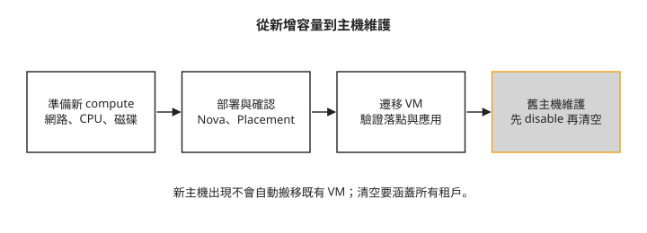

Day 24：加入 compute，遷移 VM 並準備主機維護¶
一台 compute 需要換硬體，上面的 VM 卻仍在服務。你可以先加入新主機，再把工作負載移過去；前提是 Nova 能使用新主機，目的地主機也容得下原有 VM。本章沿用 Day 23 的多節點環境，讀完能用服務註冊、Placement 資源與遷移結果判斷是否已準備好維護。
先看雲還有多少可排程資源¶
Magnum 或 CAPI 建立 worker VM 時，使用的是 Nova 已管理的 compute 容量。新增 Kubernetes worker 並不會替底層 OpenStack 增加實體主機。
Placement 記錄可供排程的資源。resource provider 是提供資源的實體，在這個 lab 中對應 compute 主機；inventory 記錄總量與限制，allocation 記錄已分配給工作負載的用量。
在執行 OpenStack CLI 的同一個虛擬環境安裝 Placement CLI 外掛 osc-placement，再單獨查詢 resource provider，確認指令能成功列出 compute 主機：
pip install osc-placement # resource provider 系列指令需要這個外掛
openstack resource provider list -f value -c name
查詢成功後再進入以下 shell pipeline，避免錯誤訊息或空輸出被後續指令誤讀成容量資料：
openstack resource provider list -f value -c uuid -c name | while read u n; do
T=$(openstack resource provider inventory list "$u" -f value | awk '/VCPU/{print $3}')
echo "$n: $T vCPU"
done
# oslab-comp1: 8 vCPU
# oslab-comp2: 8 vCPU ← 叢集總量 16 vCPU
這個查詢依欄位位置讀取 total，先確認你的輸出格式一致。它顯示的是 VCPU 總量，不是剩餘容量；要判斷能否接下一台 VM，還必須看已配置量、保留量、allocation ratio，以及記憶體、磁碟和資源限制。
下圖把本章三個動作接起來。新主機註冊成功後，既有 VM 不會自動重新平均分配：

步驟 1：準備新主機¶
本章新節點叫 oslab-comp3，管理位址 10.100.0.23，使用較小的 2 vCPU 規格。這個例子用來觀察異質容量；不代表任何規格都能接收任意 VM。新機仍須符合 KVM、CPU 相容性、網路、磁碟與 Kolla 支援條件。
新增主機前，先確認 Azure 的區域總 vCPU 配額與 VM family 配額。allocated 與 deallocated 的 VM 都計入配額，停止計費不會釋放配額；不足時，確認哪些 VM 可刪除或提出配額申請。即使配額充足，區域實際可用容量仍是另一項限制。詳見 Azure vCPU quota。本章沿用已準備好的 Azure VM，不另提供其建立流程。
新舊節點必須互相解析主機名稱，外部介面與管理網路配置也要一致。以下為前置作業摘要；DNS 調整僅在確認 stub 問題後採用，條件同 Day 23 的 DNS 排錯：
# oslab-comp3(10.100.0.23)上:
# 1. /etc/hosts 全叢集互相解析(新節點一行也要加回舊節點)
# 2. dummy0 網卡
# 3. 確認 DNS stub 故障後才考慮改用上游
sudo ln -sf /run/systemd/resolve/resolv.conf /etc/resolv.conf
接著把新主機加入現有 multinode inventory 的 compute 群組，保留其他群組：
步驟 2：只對新 compute 部署¶
在原部署機使用同一份 Kolla 設定與 inventory，依序準備主機、拉取映像、部署 compute：
kolla-ansible bootstrap-servers -i multinode --limit oslab-comp3 # 裝 docker、建 kolla 使用者
kolla-ansible pull -i multinode --limit oslab-comp3 # 預拉映像
kolla-ansible deploy -i multinode --limit oslab-comp3 # 部署 compute 角色
--limit 限制此次選取的 inventory 主機。這是官方新增 compute 的做法，但不能擴大解讀為所有 Ansible 動作都絕對不會經過其他節點：角色可能透過 delegation 在控制端執行整合工作。新增 controller 的範圍要求也不同，不能直接套用。
Nova 使用 cell 組織 compute 與其資料庫、訊息通道；新主機還需要映射到 cell，提供排程所需的主機與 cell 對應資訊。Kolla 的 nova-cell 角色會處理主機探索工作，不過是否成功仍要由結果確認：
openstack compute service list -f value -c Binary -c Host -c State | grep nova-compute
# nova-compute oslab-comp1 up
# nova-compute oslab-comp2 up
# nova-compute oslab-comp3 up ← 已註冊、已上線
openstack resource provider list -f value -c name
# oslab-comp1 / oslab-comp2 / oslab-comp3
nova-compute up 與 resource provider 出現是必要檢查，還要實際驗證工作負載能落到新主機。本例原有兩台各 8 VCPU，新增主機回報 2 VCPU；總量的增加不代表每一台 VM 都能放進它。
步驟 3：遷移既有 VM¶
live migration（熱遷移） 在 VM 持續執行時搬移其狀態。若 VM 使用 compute 本機磁碟，block migration 還要搬移磁碟內容，因此會額外占用網路與目的地儲存。
開始前確認來源與目的地在支援的 cell、CPU 與 hypervisor 相容、遷移網路可達，且目的地資源足夠。本例使用 Day 23 建立的 ha-canary，從 comp2 遷往 comp1：
openstack server show ha-canary -f value -c OS-EXT-SRV-ATTR:host # oslab-comp2
openstack server migrate ha-canary --live-migration --block-migration \
--host oslab-comp1 --wait
openstack server show ha-canary -f value -c OS-EXT-SRV-ATTR:host # oslab-comp1
openstack server show ha-canary -f value -c status # ACTIVE
兩次 host 查詢可確認落點改變，最後的 ACTIVE 顯示查詢當下的狀態。它不能證明應用程式完全沒有中斷。熱遷移會逐步複製記憶體與變更頁面，最後仍有短暫切換；要評估使用者影響，必須同時觀察應用連線，而本章沒有這項探測結果。
步驟 4：讓主機停止接收新 VM，再清空¶
維護前先 disable nova-compute，避免新的排程繼續送進主機；這不會自動搬走既有 VM。把所有租戶的 VM 逐一遷移成功後，才可以停機維護。
第二台測試 VM 名稱是 drain-canary，本章未提供它的建立命令。以下是已有該 VM 且它位於 comp2 的演練範例；重做時先以管理員身分列出 comp2 上所有租戶的 VM，選擇實際要搬移的資源，不能假設這個名稱已存在。
清空檢查應以管理員身分執行 openstack server list --all-projects --host oslab-comp2，涵蓋所有專案，做法依據 Kolla 移除 compute 流程。修正後的寫法本課沒有實跑。每台 VM 都確認遷移成功，且這項查詢成功、清單為空，才可停機維護。下方保留的查詢只涵蓋目前專案，# 0 不是全租戶清空的結果，也不能作為停機判準：
# 1. 停止接收新的排程
openstack compute service set --disable \
--disable-reason "maintenance: hardware replacement" oslab-comp2 nova-compute
# 2. 逐一遷移該主機上的 VM
openstack server migrate drain-canary --live-migration --block-migration \
--host oslab-comp3 --wait
# 3. 確認清空
openstack server list --host oslab-comp2 -f value | wc -l # 0
# 4. 維護完成且健康檢查通過後重新啟用
openstack compute service set --enable oslab-comp2 nova-compute
上面最後一步只適用於維護完成且已確認主機健康的情況；若要永久移除節點，保持 disabled，另依 Kolla 官方移除主機流程清理服務與 inventory。遷移失敗時不要繼續停機。
逐台沿用步驟 3 的 openstack server show 查詢方式，將 VM 名稱換成要檢查的資源：以 -c OS-EXT-SRV-ATTR:host 比較遷移前後的主機，以 -c status 檢查查詢當下的狀態。對上方範例，應確認 drain-canary 的 host 從 comp2 變成 comp3，且 status 為 ACTIVE，再搭配全租戶清單確認 comp2 已清空。不能只看 CPU 用量為零就移除主機。
預留維護需要的容量¶
以一台待遷移的 VM 為例，目的地主機必須同時滿足它的 CPU、記憶體與磁碟需求。即使某台主機還有足夠 VCPU，若記憶體不足，或本機磁碟放不下要搬來的磁碟內容，仍無法接收這台 VM；分散在不同主機上的剩餘資源也不能合併給它使用。
Placement 的 allocation_ratio 決定資源可配置量相對於實際量的比例，reserved 則扣除預留資源。規劃容量時須考慮這些設定與已配置量；可配置量不等於效能保證，CPU 與儲存相容性仍須另外確認。
N+1 是在承載工作負載所需的 N 台主機之外，預留一台主機的備援容量。規劃時要逐一檢查：任一台主機離線後，它上面的每台 VM 是否都能在剩餘且相容的主機找到足夠資源。不同規格的主機容量不同，不能只靠多一台主機或叢集閒置 VCPU 的加總判斷。
當 Magnum 要增加 worker，Nova 最後仍必須找到符合所有需求的資源。遇到 No valid host，除了總量，也要回頭檢查租戶配額、資源分組與主機限制。
想一想¶
- 新 compute 顯示 up，也出現在 Placement，為什麼仍要再測試能否承接 VM？
- 管理員自己的專案查不到 comp2 上的 VM，能否據此停止該主機？
- 叢集還有 8 個閒置 VCPU，但分散在數台不符合 VM CPU／記憶體條件的主機上，是否代表可以完成維護遷移？
小結¶
新增 compute 要確認主機準備、服務註冊、cell 與資源配置；主機維護則先停止新排程，再遷移並核對所有租戶的 VM。可用總量、相容條件與應用中斷各有不同的檢查方式。把它們分開，才能判斷新增容量是否真的能用，以及主機是否已可離線。
延伸閱讀¶
想再深入，可以從這幾份開始：
- Kolla-Ansible 2025.1 新增與移除主機：比較 compute 與 controller 的處理範圍。
- Nova 2025.1 熱遷移設定：確認 CPU、網路、儲存與安全前提。
- Nova 2025.1 熱遷移操作：查遷移模式與結果監看。
- Placement 2025.1 文件：理解 inventory 與 allocation。
- Azure vCPU quota：區分配額與平台容量。
下一步¶
Day 25 回顧儲存、排錯與維護情境，並整理這些 lab 尚未涵蓋的範圍。